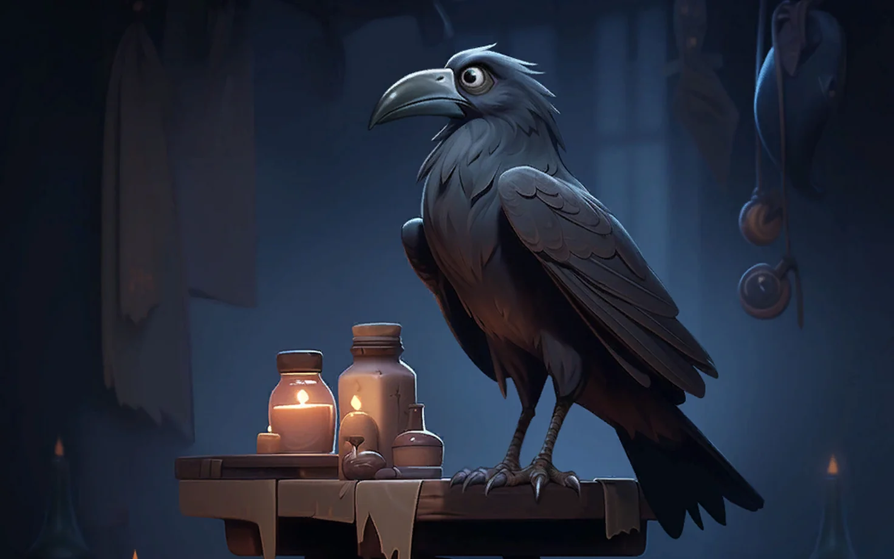
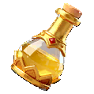
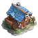
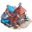
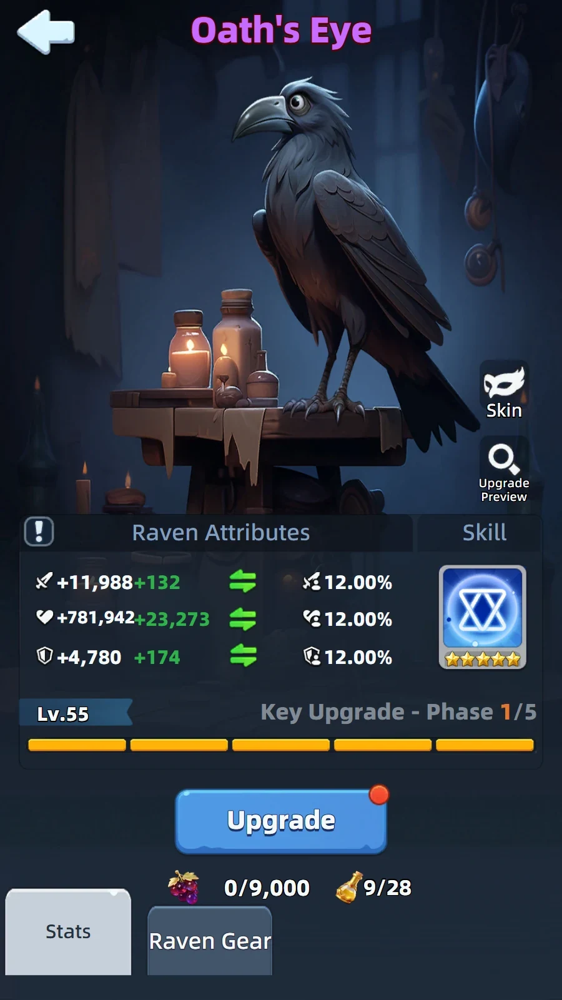
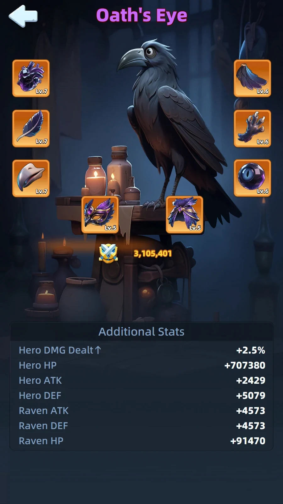
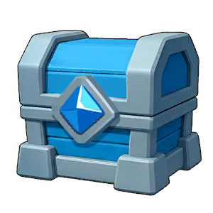
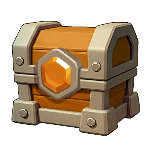
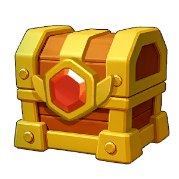
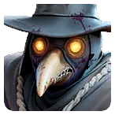

Raven
RavenRaven: a pet that boosts all your heroes at once
The Raven does not fight as a separate squad. Its stats are added to all your heroes, and its skill hits enemies in every battle. So a leveled Raven is a bonus to all squads at once.


Raven Fruit
Raises the Raven's level. Spend it on Monday (Raven day in the Duel).

Raven Essence
Needed for the Key Upgrade every 10 levels. Also spend it on Monday.

Raven Gear Chests
Open them on Wednesday: a Lv.7 chest = 810,000 Duel points.

Epigraphs — from about server day 78
Inserts that boost a squad of one faction. The first squad — after the 1st Key Upgrade.
The three Raven buildings — what each one does

Raven Nest
The main building. The Raven itself lives here: level, gear, Key Upgrade and Epigraphs. At the bottom of the window are 4 tabs: «Stats», «Raven Gear Inventory», «Upgrade Preview», «Skin».

Raven Workshop
Produces Raven Fruit by itself, little by little. Drop in and collect it. The higher the workshop level, the more fruit.

Epigraph Workshop
Opens around server day 78 (before that it is not in the city). Epigraphs are made and upgraded here. From level 15 you can make purple Epigraphs.
How to raise the Raven's level — step by step
Tap the building in the city. The Raven window opens, as in the picture on the left.
On the left — what the Raven gives heroes now, in green — how much the next level adds. On the right — the Raven skill icon.
The cost is shown under the button: grapes are Raven Fruit, the bottle is Raven Essence. Left of the slash — how much you have, right — how much you need. For example «0/9,000» = no fruit, 9,000 needed. A red number means not enough.
The «Key Upgrade - Phase 1/5» bar fills up. When it reaches the end, the Raven stops growing until you spend Raven Essence. Some English guides call this «evolution».

The Raven window — the «Stats» tab (bottom left). Under the «Upgrade» button is the cost: Raven Fruit (grapes) and Raven Essence.

When to spend. Save fruit and essence all week and spend them on Monday: it is the «Raven» day in the Alliance Duel, and the alliance gets points for the same thing. If the Survival Battle is running the «Raven» theme at the same time, 10 fruit = 1 point, 1 Stamina spent = 100 points. Details — Duel.
What the Raven gives heroes — in numbers
Every one of your heroes gets these bonuses, not just one.
| Raven Level | HP for every hero | Attack | Defense |
|---|---|---|---|
| 50 | +84 094 | +1 327 | — |
| 100 | +443 374 | +4 220 | +3 154 |
| 150 | +1 335 885 | +10 833 | +9 811 |
| 250 | +2 679 053 | +20 964 | +19 772 |
Raven Skill
In battle the Raven hits the two enemies with the most HP (usually their tanks) with a strong physical strike. The higher the Raven's level, the more effects the skill has: from level 30 targets take 12% more damage, at 50 — another +18% damage, further on the bonuses grow up to 36%.
Raven gear: what comes first
You can wear only one item in each slot. Feed all the extras into the ones you wear.
The six side slots (on the left Heart of Wisdom, Feather of the Night, Sharp Beak; on the right Tail of Wind, Attacker's Claw, Eye of Perception) give more value for the same materials. Raise them to level 7 and only then level the two bottom middle slots.
They are expensive. If you start with them, the side ones will stay weak for a long time.


The «Raven Gear Inventory» tab.
Epigraphs — inserts that boost a squad
Epigraphs open
An Epigraph is a stone with a bonus that you insert into the Raven's slots. Each slot works for its own squad.
Squad 1
Slots open after the 1st Key Upgrade.
Squad 2
After the 2nd Key Upgrade (about Raven level 150).
Squad 3
After the 3rd Key Upgrade (about level 300).
The main rule: Epigraph faction = squad faction. A Warrior Epigraph works only for a squad of Warriors. Put it on a Warlock squad and the bonus won't work. Check your squads' factions in Squads.
4 kinds of Epigraphs — their in-game names
The rarity is shown by the number in the name: I — R, II — SR, III — SSR, IV — UR. For example «Protective Charm IV - Warrior» is gold, for Warriors only. For tanks — Protective Charm and Guard of Nature, for damage heroes — Frenzied Flock. One full set is better than four unfinished ones.





This is what Epigraph chests look like in the game — from green (weak) to gold (strongest).
Open Epigraph chests on Monday — that is also Duel points for the Raven day.
Where to get Raven Fruit, Raven Essence and Raven gear
| Where | What it gives |
|---|---|
| Raven Workshop | Fruit — by itself, every day. Don't forget to collect. |
 Alliance Shop Alliance Shop | Raven items for Alliance Coins. The shop refreshes on Monday. |
 Expedition Shop Expedition Shop | Lv.3 Raven Gear Chest — bought with Expedition Medals. |
 VIP Shop VIP Shop | Raven Essence. |
 Honor Shop Honor Shop | Raven items (but buy gear blueprints first). |
 Sanctuary Shop Sanctuary Shop | Raven items. |
 Thief Hunt | Raven Essence and Raven gear. Once every 2 weeks — how to play it. |
 Cheese Trap Cheese Trap | Rewards for the Raven. Every other day — how to play it. |
Raven mistakes
Until the Key Upgrade is done, the Raven stands still. Essence in your bag gives no power.
The bonus simply doesn't work. Check the squad's faction.
Expensive and slow. Side items to level 7 first.
One full set of Epigraphs is stronger than four unfinished ones.
The Raven grew, but the Duel gave no points for it. Wait for Monday.